The Nari/Lio trials
Naming. This exploration ran under the product's working name Writing Lab, and the bird was called Nari throughout. On 2026-07-09 the product was renamed Folio and the mascot Lio. This document keeps the era-accurate names in the narrative; the tile captions and accessibility labels in the sheets come from the live data tables, which were renamed with the brand, so they say Lio.
Status. This is a frozen record, not a guideline. The rules that came out of this process live in the Folio design system (the Lio page); the exploration data itself remains in the site repo as append-only tables in components/bird-variants.ts. The sheets below are static rest-pose renders of the exact live components, exported by scripts/gen-lio-archive.tsx.
Where it ends: Bead, trial 18, column 2. A lemon bird with an amber wedge beak, one wide anime eye, round amber blush, and an ink mortarboard with a red tassel, standing feet-to-frame on a porcelain-to-silver squircle. 155 other birds auditioned for this job.
Contents
- Origin: the rig before the brand
- Method: constraint stacking
- Trial 1: six directions
- Trial 2: remixes
- Trial 3: fresh schemes
- Trial 4: detail pass
- Trial 5: twelve kitchens
- Trial 6: first graduates
- Trial 7: all graduates
- Trial 8: eye experiments
- Trial 9: no rules
- Trial 10: lawless, continued
- Trial 11: the giant pin
- Trial 12: sacred schemes
- Trial 13: shades of yellow
- Trial 14: backgrounds only
- Trial 15: the merge
- Trial 16: position ladder
- Trial 17: beak study
- Trial 18: blush study
- Trial 19: Marine study
- The final spec
- What happened to the cast
Origin: the rig before the brand
Nari did not start as a logo. The bird was ported from the Writing Lab app repo (components/auth/bird.tsx), where it lived on the auth screen as a small interactive companion: the body and beak morph between three artist poses (facing right, up, and left) to follow the cursor, the pupil glides toward it inside a travel budget, the beak opens on hover, the eye blinks on a CSS cycle, and the toes fidget on randomized schedules. There was never a master illustration file. The geometry in bird-poses.ts is the source of truth, the beak is rebuilt every frame as a constant-width wedge, and every image of the bird anywhere is a render of that rig.
That fact shaped the whole exploration: every candidate below is the same live component with different parameters, not a set of drawings. The variant type accumulated knobs as the trials demanded them: gradient pair and direction, placement transform, five hat styles (toque, paper, beret, bandana, mortarboard) with worn or perched fits, seven eye styles (standard, anime, star, heart, ring, lash, happy) with a parametric size, six cheek patterns, fangs, sleepy lids (flat and arched), sticker outlines, a goo blur filter, stretches, tilts, and mirrors. The trial tables are append-only; nothing was ever deleted, which is why this archive could be rendered from the live data years of iterations later.
Method: constraint stacking
The nineteen trials follow a rhythm: open wide, pick favorites, remix them, then alternate between adding constraints (pins) and deliberately removing all of them (lawless rounds) to check that the pinned choices still beat the field. The endgame is a sequence of single-variable studies: position, then beak color, then blush, each run with everything else frozen. Six tiles per row became the standard sample size; big questions got two or three rows.
Trial 1: six directions
The opening spread, and the round that set the frame for everything after it: a 120-unit squircle with a 32-unit corner radius, a two-stop vertical gradient, and one live bird inside. Six directions: a shadow silhouette (Nocturne), a sleepy pink blush with fangs (Blush), an outlined skull sticker (Haunt), a toque-wearing chef on gold (Chef), a giant cropped one-eye tile (Eclipse), and a warm ember gradient (Ember). Eclipse's oversized crop and the gradient-squircle style itself are the two ideas from this round that survive to the end.
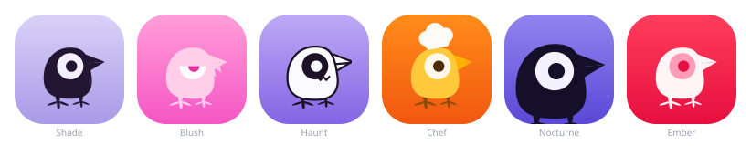
Trial 2: remixes
Three favorites emerged from trial 1: Blush, Haunt, and Chef. Trial 2 gave each two palette and mood remixes, same interactive bird, restyled. This is the first appearance of the pick-then-vary loop that runs through the whole process.
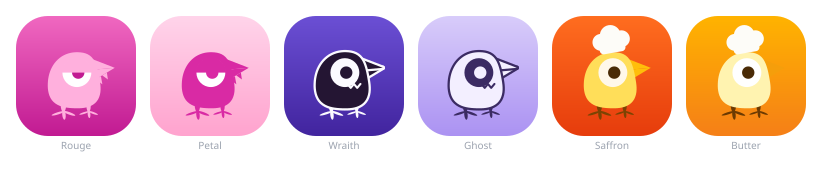
Trial 3: fresh schemes
The same three favorites rerun in colorways no earlier tile had used: Rouge (the blush design), Ghost (the haunt sticker), and Saffron (the chef, now in non-orange kitchens). Mechanically, this is where the hat learned to ride the head: anchored to the head-top vertex so it tips with the pose instead of floating. Saffron's golden-chef-on-marine-blue scheme from this round comes back sixteen trials later as the subject of trial 19.
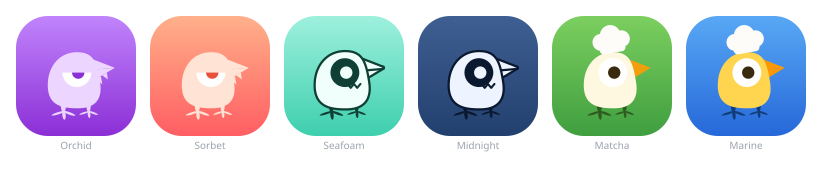
Trial 4: detail pass
The trial 3 palettes held still while the details were refined: the sleepy blush lid arches instead of cutting flat across the eye (a livelier, amused squint), the haunt sticker outline slims to 2.5 units, and the chef hat is worn into the head rather than perched on it, with a quick random jiggle on hover and a lift while the beak opens. The worn fit and the jiggle stayed in the rig permanently.
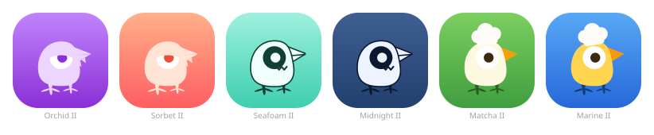
Trial 5: twelve kitchens
Chef was the strongest single direction, so it got an exhaustive round: twelve tiles covering alternative kitchen palettes, hat styles and colors, bird heights (tall, short, grand, smol, via non-uniform placement scales), eye colors, cheeks, and one sleepy cook. This is the round that proved a single concept could not carry the mark alone; the chef reads as a campaign character, not an identity.
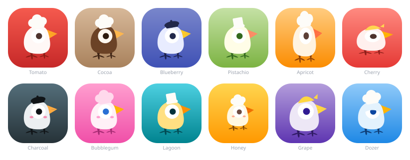
Trial 6: first graduates
The pivotal round. Blush reran in deliberately untouched palettes, and alongside it a new hat style appeared: the graduation cap, a skull-cap base under a mortarboard rhombus with a gold tassel. Two straight scholars and two blush graduates. The mortarboard is the first element that says what the product is (writing, learning, craft) rather than just being charming, and from here on it never leaves the bird's head.
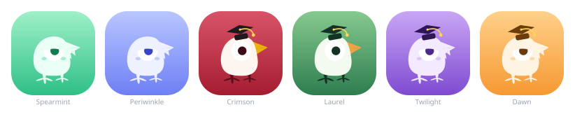
Trial 7: all graduates
Every bird graduates. Three backgrounds were pinned from earlier favorites (Saffron's ember orange, Marine's blue, Tomato's red), with two birds per background, one light and one contrasting, in fresh bird and cap colorways. The pinned-background discipline introduced here becomes the standard way later trials isolate a variable.
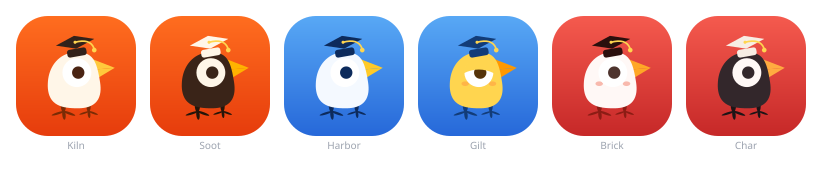
Trial 8: eye experiments
Same three pinned scenes, this time with their original birds (Saffron's golden chick, Marine's gold, Tomato's white), every one in a mortarboard, and only the eyes changing: star, heart, anime, ring, lash, happy. The anime eye, oversized with a double catchlight, is the clear winner in hindsight; it becomes a fixed constraint from trial 13 onward, and the whole set survives in the design system as the sanctioned range of how far the eye may stray in campaign work.
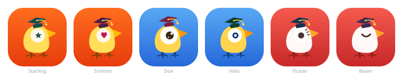
Trial 9: no rules
With the mortarboard as the single fixed point, every knob in the system was cross-combined: giant crops, goo blur, sticker outlines, stretches, tilted placements, monochrome, line-art, fangs, shaped pupils, two-hue gradients. Lawless rounds like this one are checks against local maxima: if an unconstrained bird beats the refined ones, the refinement is wrong.
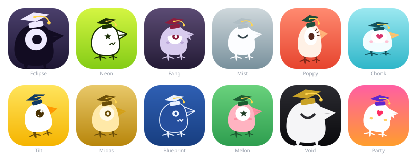
Trial 10: lawless, continued
Three more rows of the same, with new tricks: diagonal gradients, colored tassels, a mirrored bird that looks away, a tiny bird, an extra-tall stretch, a goo-plus-outline smudge, and a white-to-black gradient. Nothing here won, but the round earned a place in the guidelines as the reference for campaign energy: diagonals and stretches are quoted in campaign art and kept off product surfaces.
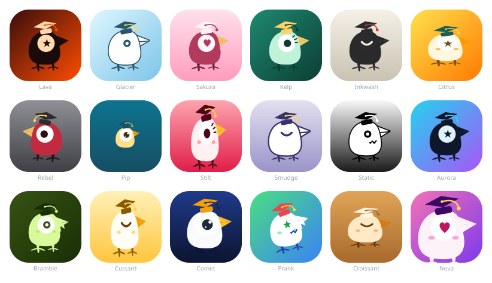
Trial 11: the giant pin
The first constraint added back after the lawless rounds: every bird sits in Eclipse's giant cropped pose from trial 1, in a mortarboard. Palettes, eyes, fangs, goo, outlines, and tassels stay wild. The giant crop reads confident at any size, and pinning it made the remaining variables much easier to judge.
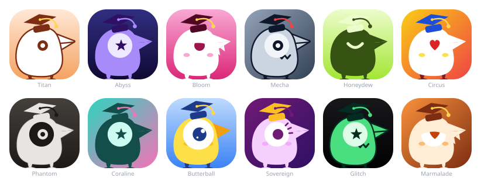
Trial 12: sacred schemes
Constraints stack: mortarboard, the giant pose, and the three beloved color schemes from trials 7 and 8 (ember orange with a golden bird, marine blue with gold, tomato red with white), with both background and bird pinned per scheme and four wild takes on each. Only the schemes are sacred; the details keep churning.
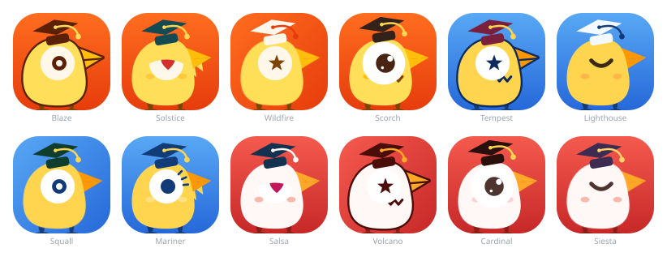
Trial 13: shades of yellow
A single bird from trial 12, Butterball, becomes the muse. Fixed: anime eye, mortarboard, giant pose, and a yellow bird, with each tile trying a different shade of yellow while the backgrounds roam free. This is the moment the identity stops being a contest between characters and becomes a search for the exact final bird.
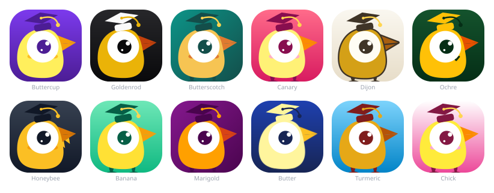
Trial 14: backgrounds only
One row. The bird is now fully assembled from the winners: Mecha's cap (ink-navy board, red tassel) on Butterball's lemon body with the anime eye and the giant pose. A rig fix landed here too: worn caps no longer sink into the oversized anime eye (the worn drop is clamped), so the cap still rides, lifts, and jiggles without colliding. Only the backgrounds explore.
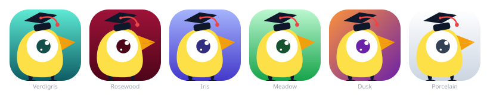
Trial 15: the merge
Porcelain (the last tile of trial 10's lawless rows) was reduced to its essentials. Similar colors merged: the beak joins the body yellow, the pupil joins the ink of the feet and board, the sclera joins the porcelain white, leaving exactly four colors: yellow, ink, red, porcelain. The eye became fully parametric (eyeScale), and each tile paired a different bird position with a different eye size. The palette merge is the single most consequential decision after the mortarboard; the final mark's entire color story is set here, except for one thing trial 17 walks back.
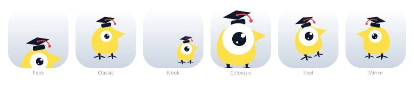
Trial 16: position ladder
Peek's eye (anime catchlights at standard 1.0 size) and the Porcelain identity fixed; six tiles walk a ladder of position adjustments from centered toward the giant crop, ending with two small nudges of the giant itself (a shift and a tilt). Close won: the bird at 1.55 scale with its feet grazing the bottom edge, big enough to feel present, small enough to keep the whole silhouette. This ladder survives in the design system as the sanctioned set of tile crops.
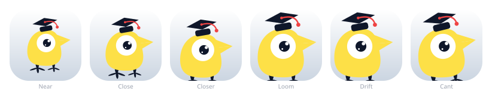
Trial 17: beak study
Position pinned to Close; the beak breaks back out of the merged palette with six colors distinct from the lemon body: amber, coral, ink, scarlet, rose, teal. Amber won, partially reversing trial 15's merge. The lesson recorded at the time: four colors is right for the identity, but the beak disappearing into the body cost the face its structure, and amber restores it while staying inside the bird's warm family.
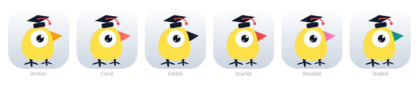
Trial 18: blush study
Beak fixed to amber, position still Close, Porcelain identity throughout. Six cheek patterns, colored only from the two accents already on the bird (tassel red or beak amber): oval, round, lines, dots, crescent, dash. Bead, the round amber blush dots, became the mark. This is the last aesthetic decision in the mainline; everything after is verification.
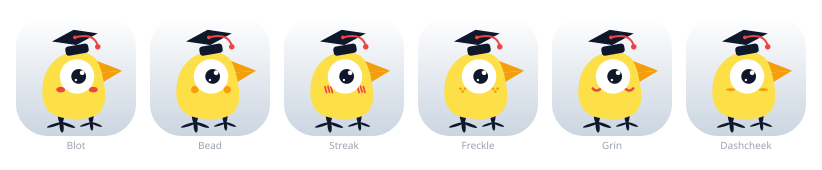
Trial 19: Marine study
A portability check rather than a redesign: the finalized Bead configuration ported to trial 3's golden-chef-on-marine scheme, with the scheme pinned and six takes on how much of Bead's ink survives the move (board and feet in deep marine, ink, or toque white; blush in orange or tassel red; plus one tile keeping the finalized lemon bird with only the background swapped). The mark held up, which is what allowed campaign recolors to become a sanctioned practice instead of a feared one.
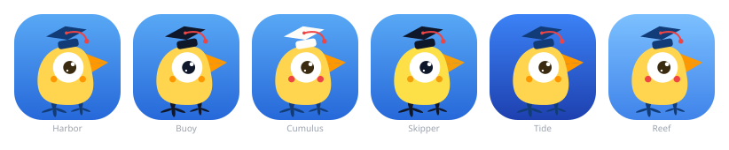
The final spec
The mark is Bead (trial 18, column 2) with one addition made after the trials: capBehind. On up-facing poses the finalized mark's cap sinks behind the body, as if slung behind the back, instead of colliding with the beak; the trial 18 tile itself stays as authored, because the tables are append-only. In data terms:
- Body
#fde047(lemon), beak#f59e0b(amber), feet, board, and pupil#0f172a(ink), sclera and background top#ffffff(porcelain), background bottom#cbd5e1(silver), tassel#ef4444(red). - Anime eye at standard size (1.0) with the double catchlight.
- Round blush dots in beak amber.
- Worn mortarboard, grad style, ink board, red tassel.
- Placement
translate(12.96 -184.90) scale(1.55): the Close crop, feet grazing the frame.
The bird was renamed from Nari to Lio with the Folio rebrand on 2026-07-09. Nothing about the mark changed in the rename; only the words around it.
What happened to the cast
All 156 birds remain live in the site repo. The design system's Lio page keeps them in a collapsed archive section as campaign reference (a spooky-season Haunt, a cooking-feature Saffron), with the rule that product surfaces use Lio only. The load-bearing rows were promoted into the guidelines themselves: trial 18 as the sanctioned blush range, trial 8 as the eye range, trial 16 as the sanctioned crops, and trials 3 and 10 as the reference for brand versus campaign gradients. This document is the only place the process is narrated; the design system states the results and nothing else.